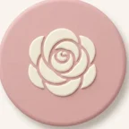
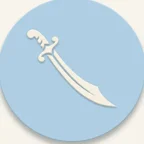
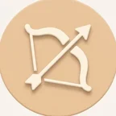
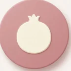

Emre · Стамбул · 12 мин
Sabah namazına kalkmak zor geliyordu. Kardeşimle birbirimizi uyandırmaya başladık. Üç haftadır kaçırmadık, elhamdülillah.
турецкий
Видно, кто из своих уже прочитал. Одно касание напомнит остальным. Соцсеть, где самое важное уведомление дня приходит от брата.



Брат напомнил: вас ждут на Аср. Мама и Али уже прочитали.
Лайки, распродажи, ролики, чаты. Каждое приложение борется за вашу минуту. Firdausly переворачивает соцсеть: здесь зовут к намазу, и зовут свои.
Отметили намаз, и близкие видят золотую отметку. Кто не успел, получит тихую открытку с одной кнопкой «К намазу». Без упрёков и чужих глаз: это видят только ваши.
PlusБлизкие и напоминания, 14 дней бесплатно. Принять приглашение и открыть открытку можно без подписки.
«И напоминай, ибо напоминание приносит пользу верующим»Коран, сура «Аз-Зарият», 51:55
Настоящий будильник iPhone: звонит даже в беззвучном режиме. Позовите своих, и утром вы встаёте вместе. Встал один, и остальные видят это сразу.
Будильник на Фаджр бесплатно. Plusобщий будильник с близкими и звонок азаном, 14 дней бесплатно.
Аллаху акбар. Утро началось с намаза.
Али уже встал05:36Пришло время намаза, и Фокус закрывает Instagram, TikTok и всё, что вы выбрали. Отметили намаз, и всё открылось. Что закрывать, решаете только вы, аварийный выход есть всегда.
Включите Фокус: так выглядит телефон, когда приходит Аср.
PlusРаботает через «Экранное время» Apple. 14 дней бесплатно.
Аяты, хадисы, Мекка на закате. Без музыки и без пранков. Пришло время намаза, и лента сама встаёт на паузу. Смотреть может каждый, бесплатно.
Соцсеть, которая делает ближе к религии: лента и истории о том, что помогает держаться. Брат из Стамбула пишет по-турецки, а вы читаете по-русски. Нажмите «Показать перевод».
Sabah namazına kalkmak zor geliyordu. Kardeşimle birbirimizi uyandırmaya başladık. Üç haftadır kaçırmadık, elhamdülillah.
Сцена: живые хутбы и разговоры с уммой
Заходите, слушайте, просите слово. Вести эфир могут только проверенные имамы, преподаватели и чтецы.

Имам Билалведёт эфирАлиговорит Ибрагимпросит слово
Ибрагимпросит слово Зейнабслушает
ЗейнабслушаетНе нужно уходить туда, где лента снова затянет. Всё своё рядом с намазом.
Дочитала Аль-Кахф
 Амина
АминаКто на Фаджр в центральной?Юсуф
Сабр и шукр

МарьямЮсуф: завтра будим друг друга в 05:40
Голосовое сообщение · 0:14
Момент после Асра
Сынок, в пятницу вместе на джуму

Вы решаете, кто может вам писать. Позовите вали, и он увидит запросы от мужчин. Дни, когда намаз не читают, отмечаются тихо и хранятся только на телефоне.
Включите «Вали» на карточке: запрос от мужчины уйдёт отцу, а не вам.
Всё, ради чего ставят приложение для намаза, у Firdausly бесплатно и без рекламы.
Казахстан по таблице ДУМК, Татарстан по ДУМ РТ, Турция по Diyanet. В других странах по вашему методу и мазхабу.
Компас и карта
Пять азанов и звуки природы, свой на каждый намаз. Plus
Нажимайте, чтобы считать
Русский и английский перевод работают без сети
وَذَكِّرْ فَإِنَّ الذِّكْرَىٰ تَنفَعُ الْمُؤْمِنِينَ
И напоминай, ибо напоминание приносит пользу верующим. 51:55
И ещё бесплатно: будильник на Фаджр, виджеты со временем намаза, када без упрёков и отметка камерой, чтобы отметка была честной. Снимок разбирается на самом iPhone и никуда не уходит.
Виджеты на экране «Домой» и блокировки. Живой отсчёт в Dynamic Island, а в Рамадан до ифтара.
«Следующий намаз» и «Сегодня». Виды с картинами Firdausly с Plus.
Нажмите на остров в телефоне: так он раскрывается на iPhone.
Авторские картины для главного экрана, чата и виджетов. Каждая о том, что помогает держаться: смелость, путь, суджуд, свои рядом.
Трендовый звук не толкает чужие ролики выше. Решает смысл и то, как досматривают.
Сначала зрители вашего языка, потом шире, потом вся умма. Чтение Корана показываем всем.
Мы только запускаемся: авторов в Reminders пока немного, и сильный ролик видит вся лента. Первые три ролика нового автора получают прибавку показов.
Пример, не обещание. Допустим, по одному рассказу Firdausly ставят 2% подписчиков, после месяца в подарок платят 10% из них, и каждый берёт Plus на месяц в Казахстане: 3 790 ₸, после НДС, комиссии Apple и налога 2 666 ₸, вам 20%, то есть 533 ₸.
Ваши хутбы и уроки там, где их ждут: у людей, которые держат намаз и зовут своих.
partners@firdausly.com · отвечаем лично
Джума и уроки вживую для тех, кто не смог прийти. Ведут только проверенные аккаунты.
Людям видно, что это ваша мечеть или школа, а не однофамилец. Знак доверия не продаётся.
Короткие напоминания от вашего имама в ленте, которую смотрят перед намазом.
Им месяц Plus в подарок, проекту 20% с их оплат: на содержание мечети, кружка, медресе.
Всё, без чего не прочитать намаз вовремя, бесплатно. Plus для тех, кто держит намаз вместе со своими.
Есть и Premium: всё из Plus, золотой полумесяц у имени, номер сторонника с истоков и стикеры «Гази».
Цены для Казахстана. В другой стране App Store покажет цену в вашей валюте до оплаты.
Снимок отметки, координаты и тихие дни не покидают телефон.
Записи, фото и имена проверяются до показа. Пожаловаться и заблокировать можно отовсюду.
Ничто не поощряет пропуск намаза. Пропустили: када и мягкая поддержка.
Сделано в Казахстане. Время по официальным таблицам ДУМК, ДУМ РТ и Diyanet. Аккаунт удаляется в настройках вместе с данными.
Скоро в App Store для iPhone с iOS 17 и новее. Оставьте почту или Telegram, и в день выхода мы напишем вам первыми.
Сначала iPhone. Android в планах; если вы на Android, оставьте контакт, и мы сообщим.
Нет. Отметки видят только ваши близкие, которых вы сами добавили. Кому показывать, решаете вы.
Отправьте приглашение ссылкой. Открытка-напоминание и приглашение на совместный намаз откроются и без подписки, а по вашему приглашению пробный период Plus будет 21 день.
В Казахстане по официальной таблице ДУМК, в Татарстане по ДУМ РТ, в Турции по Diyanet. В других странах по методу расчёта и мазхабу, которые вы выберете.
Да, через «Экранное время» Apple. Что закрывать, выбираете только вы в окне Apple. Отметили намаз, и приложения открылись. Аварийный выход есть всегда.
Нет. Голос, слово и нашид без инструментов. Каждый ролик до показа проходит проверку кадров, речи и текста.
Основа бесплатна навсегда. Firdausly Plus в Казахстане 3 790 ₸ в месяц или 22 990 ₸ в год, первые 14 дней бесплатно. Подписка продлевается сама, если не отменить её за сутки до конца срока.

Будите друг друга на Фаджр, напоминайте о намазе, держитесь вместе. Начните с Firdausly.